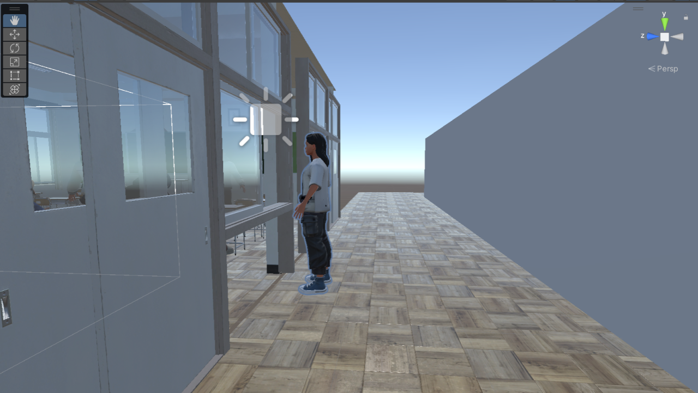

Project Title: A VR system for alleviating test anxiety
This project is focused on an application with Unity3D on VR headsets. Our goal is to develop a solution of test anxiety alleviation with a game where users can control a vurtual avatar to write with motion capture gloves..
Our project will be developed using Unity3D and VR headsets. The project will be developed by a team of four members.
Email: yangjun2004@foxmail.com
Role: [Project Leader, Developer, Designer]
Email: 764680721@qq.com
Role: [Developer, Researcher]
Email: peter2317@live.com
Role: [Designer, Tester]
Email: 3193792220@qq.com
Role: [Developer, Analyst]
1. Aug 22nd 2024 We have learned the basics of Unity3D environment and a basic program has been written.
2. Aug 28th 2024 We have achieved the connection between PICO and the computer, experienced the virtual reality scene, and familiarized ourselves with the relevant operation process.
3. Sept 1st 2024 We have implemented PICO and glove to computer connection, which can capture finger movements in simulated classroom environment, but it seems impossible to write with a pen.
4. Sept 5th 2024 Our device was able to successfully capture gestures and complete writing on paper in a simulated classroom environment, but the writing was not stable and precise enough.
5. Sept 8th 2024 We have achieved relatively stable writing and invited other students to experience PICO and simulate classroom environments, and exchange their experiences and insights.
After multiple rounds of debugging and testing, we successfully connected PICO, sensing gloves, and a computer, and experienced the simulated exam system in Unity. Through calibration in Unity in the early stage and subsequent adjustments to sitting posture and glove sensor orientation, normal finger movement in the scene was achieved. By holding the "pen" in the scene, basic answers can be given on the exam paper in the scene.
In order to simulate a more realistic classroom scene, student Zhang Xinzhe in the group added a patrol teacher outside the classroom corridor, who would periodically walk back and forth outside the classroom corridor.
Finally, our group invited a student outside of the course to experience our equipment and simulated exam system. He shared his experience and gave our group some expectations and suggestions.
If you have any questions, feel free to reach out to us at yangjun2004@foxmail.com.